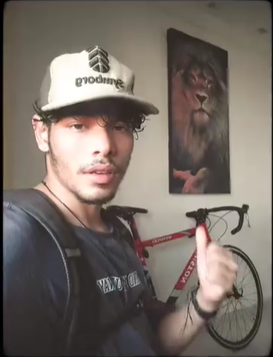
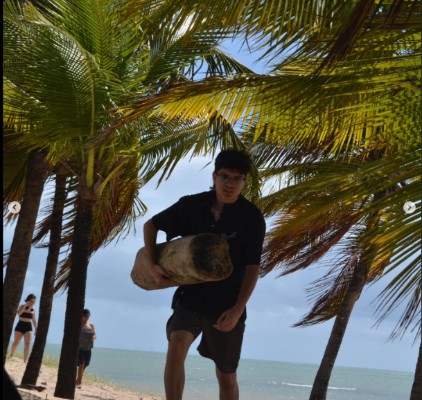

.png)
VENUS:
Bike crew®
A Venus Crew foi formada por dois amigos que compartilhavam o desejo de andar de bicicleta, mas o que os motivou ainda mais a criar a crew foi um item específico: o Manwa Windbreak. Para quem não conhece, o Windbreak é geralmente uma jaqueta leve, projetada para proteger contra o vento, mas também tem um apelo estético muito forte, principalmente no contexto do estilo de vida urbano ou no ciclismo.
MEMBROS DA VENUS®

Mosca: O Visionário da Vênus
Mosca, o fundador da equipe Vênus, foi o primeiro a descobrir o verdadeiro poder das bikes ao ler um misterioso manhwa que narrava histórias lendárias sobre ciclistas com habilidades sobre-humanas. Fascinado pelo potencial revelado nas páginas, ele decidiu testar esses ensinamentos e se tornou um sprinter formidável, conhecido por sua velocidade explosiva e determinação incansável. Com o conhecimento adquirido, Mosca reuniu outros ciclistas e compartilhou sua visão sobre o poder oculto das bikes, transformando a Vênus em uma equipe imbatível e guiando seus integrantes rumo à glória.

Balata: O Arquiteto da Vênus
Balata foi um dos primeiros a ser treinado por Mosca, que o apresentou ao lendário manhwa que revelava os segredos das bikes. Determinado e focado, Balata devorou cada página em apenas dois dias, absorvendo cada detalhe sobre técnica e construção. Inspirado pelo conhecimento recém-adquirido, ele decidiu criar sua própria bike, projetada para alcançar a máxima eficiência em provas contra o relógio. Seu talento como estrategista não passou despercebido, e foi ele quem propôs a formação oficial da equipe Vênus, unindo forças com Mosca e consolidando a equipe como uma potência nas pistas.
